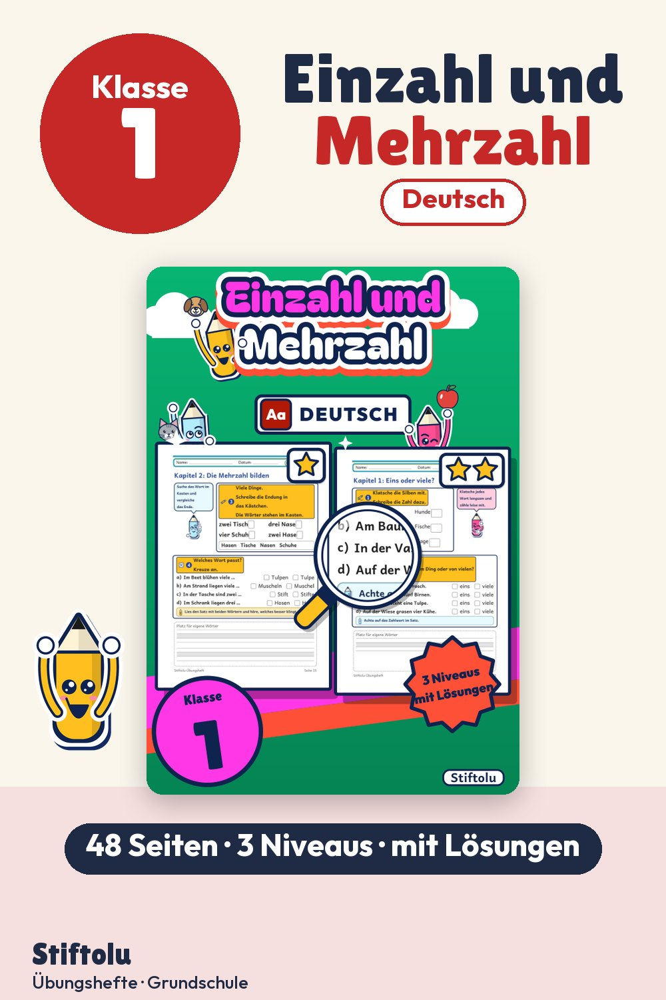

Werbung · Übungsheft von Stiftolu
Einzahl und Mehrzahl in Klasse 1 üben: ein Hund, zwei Hunde, viele Nomen

Ein Hund, zwei Hunde: Wie wird aus eins viele? Erstklässler erkennen zuerst, ob ein Wort für ein Ding oder für mehrere steht. Dann bilden sie die Mehrzahl mit den Endungen -e, -n und -er und setzen sie in Sätze ein. Bilder und kurze Wörter helfen in der ersten Stufe. In 3 Niveaus und mit Lösungen sind 48 Seiten erhältlich auf eduki.